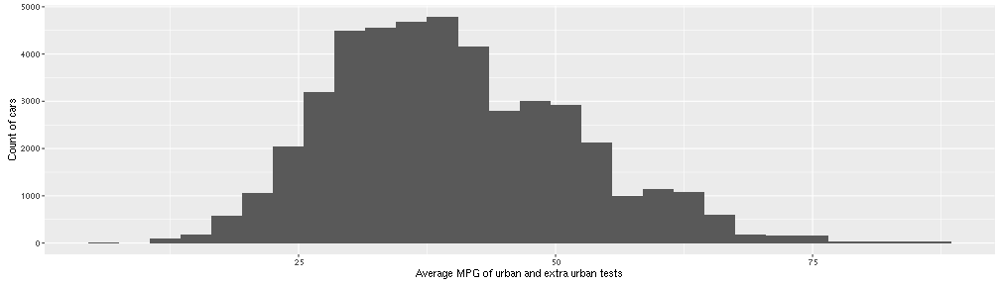
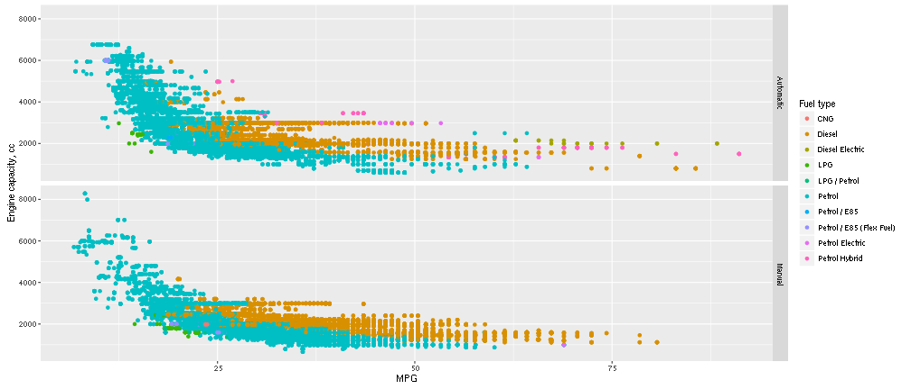

demetr
fuelCons <- fuelCons %>%
filter(combined_imperial < 100, transmission_type != "") %>%
mutate(transmission_typeX = as.factor(ifelse(transmission_type == 'Manual',
'Manual', 'Automatic'))) %>%
mutate(particulates_emissions = as.numeric(as.character(particulates_emissions)))
histMPG <- qplot(combined_imperial,
data = fuelCons,
binwidth = 3,
xlab = "Average MPG of urban and extra urban tests",
ylab = "Count of cars")

